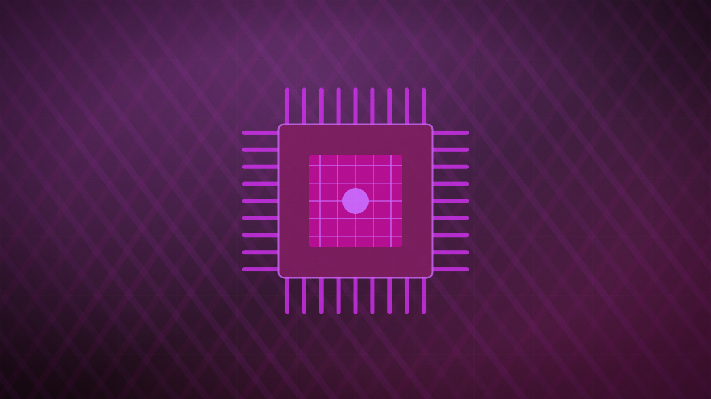

Google launches Gemini 3.8 Flash and Flash Cyber, targeting autonomous agents
The releases introduce a standard agentic workhorse model and a specialized security variant, coupled with a limited-access Fairwind Program for vetted cyberdefenders.

Original cover art, generated for this story. THE VISSION does not republish third-party press imagery.
- Google DeepMind launched Gemini 3.8 Flash and Gemini 3.8 Flash Cyber on September 2, 2026, priced at $0.75 per million input and $3.75 per million output tokens, according to VentureBeat and Ars Technica.
- Gemini 3.8 Flash is designed as an agentic workhorse for multi-step reasoning, coding, and specialized domains, featuring a 1-million-token input context and a 64,000-token output limit.
- Gemini 3.8 Flash Cyber is a specialized model for autonomous vulnerability discovery and patching that achieved an 86.2% score on the CyberGym benchmark and 47.2% on CWE-Bench.
- Google simultaneously announced the Fairwind Program, a proactive cyber defense initiative backed by a $100 million commitment to provide vetted defenders and critical sectors with automated patching tools.
Google DeepMind released Gemini 3.8 Flash and Gemini 3.8 Flash Cyber on September 2, 2026, introducing two highly specialized variants of its mid-tier model architecture, according to reports from VentureBeat and Ars Technica. The launches represent Google's strategic push to deliver cheap, high-efficiency 'workhorse' intelligence for autonomous software agents and automated cyber defense.
The standard Gemini 3.8 Flash is optimized for agentic workflows, multi-step reasoning, and software development, maintaining an input context window of 1 million tokens and an output limit of 64,000 tokens. Priced at $0.75 per million input tokens and $3.75 per million output tokens, the model delivers frontier-level performance at lower latency. On benchmarks like DeepSWE, Google claims the model excels at long-horizon coding tasks, and outperformed predecessors on specialized benchmarks for legal and financial agents, including Vals Finance Agent V2 and Harvey's Legal Agent Benchmark.
The Gemini 3.8 Flash Cyber variant is purpose-built for vulnerability discovery, mitigation, and automated software patching at scale. On cybersecurity benchmarks, Flash Cyber scored 86.2% on the CyberGym vulnerability discovery test and 47.2% on the CWE-Bench patching evaluation. According to Google CEO Sundar Pichai, the security model is capable of identifying and developing verified patches for critical foundational vulnerabilities in under two hours — a process that typically requires months of expert human labor.
To govern the deployment of its new security tooling, Google simultaneously announced the Fairwind Program, a proactive cyber defense initiative. The program limits initial access to 'trusted defenders,' including national cybersecurity authorities, core tech platforms like Snowflake and Palo Alto Networks, and operators of critical infrastructure such as hospitals and energy utilities. Google.org has committed over $100 million to fund global cyber resilience, including providing $36 million to establish 35 cyber clinics supporting municipal utilities and public school districts.
By splitting Gemini 3.8 Flash into general-purpose agentic and specialized cybersecurity editions, Google is shifting the frontier model race from general benchmarks to concrete, domain-specific execution envelopes. A pricing structure that matches older models while offering a 64,000-token output limit directly supports the economics of long-horizon software agents, while the Fairwind Program represents a highly regulated approach to deploying automated, offensive cyber-defense tools in critical infrastructure.